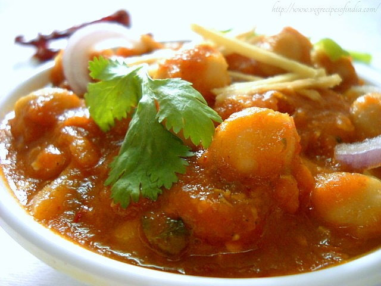

|  | chana masala or chole masala both are same and there are different ways of making chole but this recipe is different from other because this recipes is dry or gravid. This recipe of chana masala is quite different in the common sense that no onions are used in it. |
Ingredients: 1 tablespoon coconut or olive oil 1½ teaspoons cumin sources 1 yellow onion cut 1 tablespoon forced or milled garlic 1 tablespoon peeled ginger 1 green Serrano pepper 1½ teaspoons garam 1½ teaspoons ground coriander ½ teaspoon ground turmeric, ¾ teaspoon salt or as per required ¼ teaspoon cayenne pepper as per required, 1 peeled tomatoes with their juices, 2 chickpeas, drained and rinsed, 1 cup unprepared basmati rice for serving as required, use Lemon wedges, for garnishing, Fresh cilantro, chopped, for garnishing as per required. Method: Boil the chanas using some salt in a pressure cooker (covered pan optional) with enough water for 15 to 20 mins. After 15 to 20 mints drain a chana and keep apart, tomatoes peel the garlic and ginger and wash them and put in a mixer also add all the ingredients and Make a paste then warmth oil in a pan and put the ground paste and Deep-fry the masala paste for 7-8 mints in oil until the smell of the tomatoes, ginger, garlic vanishes and the oil jumps to hang on the upper now add about 1 cup of water and the chillies (green), after 3-4 mints add the heated Chana, mishmash the Chana with the masala, let the chana masala cook for 15-20 mints on a little flame. save on stirring in among, add garam masala powder salt as per required and mishmash with chana masala heat the chana masala for 2-3 mints extra finally add sliced coriander grasses to chana masala. serve chana masala with cuts of onion, lemon wedges and ginger julienne, and also provide naan, poori, roti, rice and bhatura with chana masala. |
||||

Crispy Pizza
Crispy Pizza and Pressed Panini authentic recipe One of the very famous Street Italian food.
Golden Chicken
Crispy and curried Golden chicken recipe for cooking Golden Chicken ghastly.